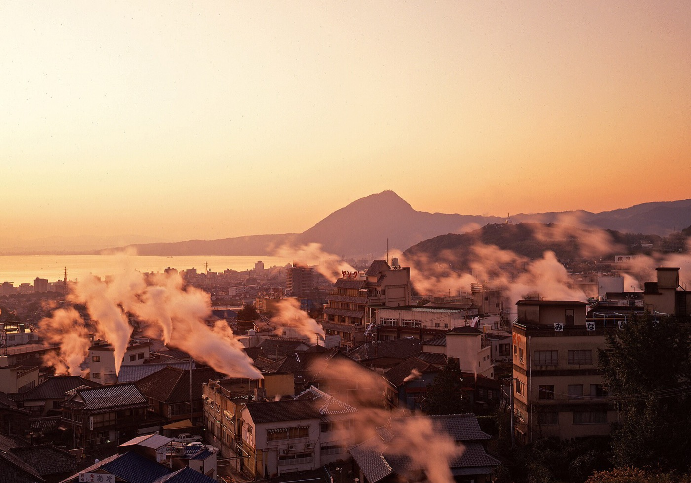
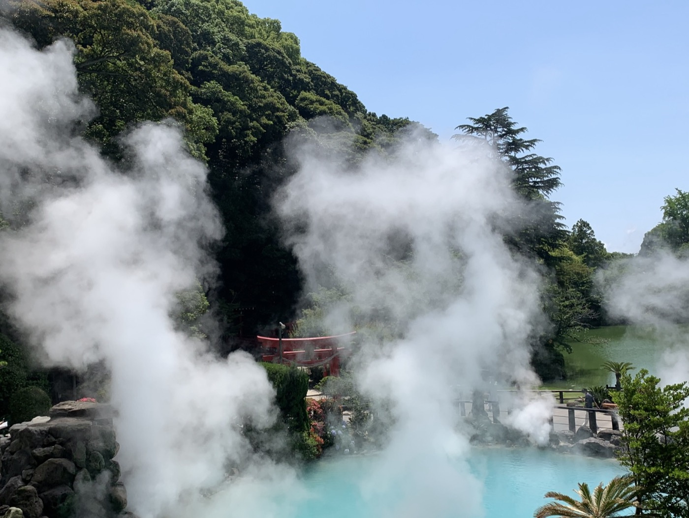
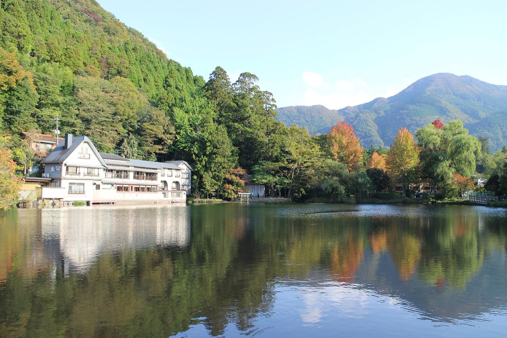

Keyくんとお母さんの 九州 日帰り6案

- 案
- 6から選ぶ
- 全部
- 日帰り福岡発
- 移動
- レンタカー運転はKeyくん
下にスクロールで 朝 → 夜
運転できるか先に確かめて
どの案も車が前提なので、ここだけは出発前に潰しておいてください。日本でレンタカーを運転するには、ジュネーブ条約方式の国際運転免許証（または日本の免許）が要ります。香港発給の国際運転免許証は使えます。中国本土の免許証＋翻訳文だけでは日本では運転できません。 運転するのがKeyくんなら香港の免許で国際免許を取っていれば大丈夫です。
- 1国際運転免許証香港発給のものは日本で有効。パスポートと一緒に必ず持ち歩く
- 2ETCカードレンタカー屋でETCカードも一緒に借りる。高速代が安くなるし、別府湾スマートICはETC専用
- 3服装（9月下旬〜10月）大分の平年値で日中25〜26℃、朝晩は15〜19℃。薄手＋脱ぎ着できる上着。鶴見岳や由布院まで行くなら風よけを1枚
- 410月31日は別府を避ける東京ディズニーリゾートのスペシャルパレードが別府市街である日。交通規制で普段の所要時間が当てにならない
どれか1つ押してください
下に6案あります。上の3つが別府、下の3つが別府以外の九州です。気に入ったものの「この案にする」を押すと、ここに残ります。押しても何も送信されないので、気軽に押し比べてください。
青い湯と湯けむりを見て回る

別府でいちばん有名な景色を、歩く距離を短くして回る案です。地獄は7つありますが全部は回りません。駐車場が各地獄の目の前にあって全部無料なので、車を停める→見る→また乗る、の繰り返しで済みます。お湯には入らないので、着替えも要りません。
- 17:30 博多駅を出る福岡都市高速→太宰府IC→九州道→大分道→別府IC。太宰府IC〜別府ICはETC 3,440円・127.9km・約1時間31分。都市高速630円と合わせて片道4,070円
- 29:30 海地獄コバルトブルーの湯。8:00-17:00・年中無休。単独500円、共通券なら2,400円で7か所。無料駐車230台。貸出車いす3台（予約不可）
- 310:30 かまど地獄1丁目から6丁目まで見て回る仕掛け。足湯と飲泉あり。単独500円、無料駐車35台
- 411:15 湯けむり展望台無料・8:00-21:00。街じゅうから湯気が上がる別府らしい眺め。駐車8台しかないので満車なら素通りでいい
- 511:45 地獄蒸し工房 鉄輪で昼地面から出る蒸気で自分で蒸す。10:00-19:00(LO18:00)・第3水曜休・予約不可。釜代は小15分400円＋食材代。無料駐車26台。隣のポケットパークに無料の足湯
- 613:30 血の池地獄 → 龍巻地獄鉄輪から車で10分。赤い池と間欠泉。龍巻は噴き出すまで待つので30〜50分みておく。どちらも無料駐車あり
- 715:00 岡本屋売店明礬温泉の地獄蒸しプリン。持ち帰り486円・店内495円。8:30-18:30・無休。※同じ岡本屋の「山の湯」と明礬地獄遊歩道は休業中
- 815:45 別府IC → 17:30 博多高速代は往復で8,140円ほど（平日・割引なし）
他の人と一緒にならないお風呂

日本の大浴場は裸で他人と入るので、抵抗があるなら「家族風呂・貸切風呂」を使う手があります。部屋ごと1時間いくらで借り切れて、親子2人だけで入れます。この案は貸切風呂を1回しっかり入って、あとは食べ歩きと見学。歩く距離がいちばん短い案です。
- 18:00 博多駅を出る別府ICまで約1時間45分。明礬から回るなら別府湾スマートIC（ETC専用）で降りる手もある
- 210:20 みょうばん湯の里わら葺きの湯の花小屋の見学は無料（9:00-18:00）。貸切風呂はわら葺き4棟で1時間2,000円（1棟だけ2,500円）。10:00-19:00・受付18:00まで。予約できず当日受付順なので、着いたらまず名前を書く
- 312:00 岡本屋売店で軽く昼車で3分。温玉うどん770円、地獄蒸したまごサンド770円、とり天カレー1,320円。締めに地獄蒸しプリン486円。8:30-18:30・無休
- 413:30 鉄輪へ降りる明礬から10〜15分。地獄蒸し工房の隣のポケットパークに無料の足湯。靴下を脱ぐだけなので、お母さんが温泉に慣れる練習にもなる
- 514:30 海地獄を1つだけ単独500円。7つ回らず、いちばんきれいな1つだけ見る。無料駐車230台。8:00-17:00
- 615:30 湯けむり展望台無料。車を停めて5分見るだけ。土日祝は19:00-21:00にライトアップ
- 716:00 別府IC → 17:45 博多貸切風呂が取れなかった時の代わり: 別府桜湯（別府ICすぐ・貸切20室・60分2,000〜3,000円・電話予約可・「鴛鴦桜」はバリアフリー表記）
山を越えて由布院まで足を伸ばす

別府は1〜2か所に絞って、山を越えて由布院へ行く案です。車があるからできる回り方で、景色がいちばん変わります。そのぶん運転は長く、歩く距離も増えるので、お母さんの足に自信があるならこれ。
- 19:15 別府ICを降りるICから別府ロープウェイまで車5分。無料駐車約250台
- 29:30 別府ロープウェイ（鶴見岳）9〜10月は9:00-17:30、上り最終17:00。往復1,800円、70歳以上は1,700円（年齢の分かるものを持って行く）。片道約10分・20〜30分間隔。両駅に車いす用の階段昇降機あり。悪天候で運休することがある
- 311:00 海地獄単独500円。無料駐車230台。8:00-17:00・年中無休
- 412:00 鉄輪か別府市街で昼地獄蒸し工房 鉄輪（10:00-19:00・第3水曜休）か、別府冷麺の六盛 松原本店（冷麺並990円・11:30-14:00・水曜休・スープが終わると早じまい）
- 513:30 由布院へ一般道で45〜60分。山道は霧が出ることがある
- 614:30 金鱗湖と湯の坪街道湖だけなら30〜45分、街道も歩くなら90〜120分。セイワパーク金鱗湖は26台・平日1回400円/土日祝900円。前払いのキャッシュレス専用で現金不可。湖に近い駐車場を選ぶと歩く量が減る
- 716:30 湯布院IC → 18:15 博多由布院は夕方に駐車場から出る車で混む。16:30には動き出しておく
どれでも、車があれば1日で回れます
決まったら教えてください。その案だけの詳しいしおり（時刻表・店の予約・駐車場の入口まで）を作ります。
料金・営業時間は2026年9月23日に各施設の公式サイトで確認したものです。休業や臨時変更があるので、行く前にもう一度公式で確かめてください。写真は Wikimedia Commons のクリエイティブ・コモンズ画像です。